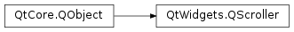

QScroller¶
Synopsis¶
Functions¶
- def
finalPosition() - def
handleInput(input, position[, timestamp=0]) - def
pixelPerMeter() - def
scrollerProperties() - def
setSnapPositionsX(first, interval) - def
setSnapPositionsX(positions) - def
setSnapPositionsY(first, interval) - def
setSnapPositionsY(positions) - def
state() - def
stop() - def
target() - def
velocity()
Slots¶
- def
ensureVisible(rect, xmargin, ymargin) - def
ensureVisible(rect, xmargin, ymargin, scrollTime) - def
resendPrepareEvent() - def
scrollTo(pos) - def
scrollTo(pos, scrollTime) - def
setScrollerProperties(prop)
Signals¶
- def
scrollerPropertiesChanged(arg__1) - def
stateChanged(newstate)
Static functions¶
- def
activeScrollers() - def
grabGesture(target[, gestureType=TouchGesture]) - def
grabbedGesture(target) - def
hasScroller(target) - def
scroller(target) - def
scroller(target) - def
ungrabGesture(target)
Detailed Description¶
The
PySide2.QtWidgets.QScrollerclass enables kinetic scrolling for any scrolling widget or graphics item.With kinetic scrolling, the user can push the widget in a given direction and it will continue to scroll in this direction until it is stopped either by the user or by friction. Aspects of inertia, friction and other physical concepts can be changed in order to fine-tune an intuitive user experience.
The
PySide2.QtWidgets.QScrollerobject is the object that stores the current position and scrolling speed and takes care of updates.PySide2.QtWidgets.QScrollercan be triggered by a flick gestureQWidget *w = ...; QScroller::grabGesture(w, QScroller::LeftMouseButtonGesture);or directly like this:
QWidget *w = ...; QScroller *scroller = QScroller::scroller(w); scroller->scrollTo(QPointF(100, 100));The scrolled QObjects receive a
PySide2.QtGui.QScrollPrepareEventwhenever the scroller needs to update its geometry information and aPySide2.QtGui.QScrollEventwhenever the content of the object should actually be scrolled.The scroller uses the global
PySide2.QtCore.QAbstractAnimationtimer to generate its QScrollEvents. This can be changed withQScrollerProperties.FrameRateon a per-PySide2.QtWidgets.QScrollerbasis.Several examples in the
scrollerexamples directory show howPySide2.QtWidgets.QScroller,PySide2.QtGui.QScrollEventand the scroller gesture can be used.Even though this kinetic scroller has a large number of settings available via
PySide2.QtWidgets.QScrollerProperties, we recommend that you leave them all at their default, platform optimized values. Before changing them you can experiment with theplotexample in thescrollerexamples directory.
-
PySide2.QtWidgets.QScroller.State¶ This enum contains the different
PySide2.QtWidgets.QScrollerstates.Constant Description QScroller.Inactive The scroller is not scrolling and nothing is pressed. QScroller.Pressed A touch event was received or the mouse button was pressed but the scroll area is currently not dragged. QScroller.Dragging The scroll area is currently following the touch point or mouse. QScroller.Scrolling The scroll area is moving on it’s own.
-
PySide2.QtWidgets.QScroller.ScrollerGestureType¶ This enum contains the different gesture types that are supported by the
PySide2.QtWidgets.QScrollergesture recognizer.Constant Description QScroller.TouchGesture The gesture recognizer will only trigger on touch events. Specifically it will react on single touch points when using a touch screen and dual touch points when using a touchpad. QScroller.LeftMouseButtonGesture The gesture recognizer will only trigger on left mouse button events. QScroller.MiddleMouseButtonGesture The gesture recognizer will only trigger on middle mouse button events. QScroller.RightMouseButtonGesture The gesture recognizer will only trigger on right mouse button events.
-
PySide2.QtWidgets.QScroller.Input¶ This enum contains an input device agnostic view of input events that are relevant for
PySide2.QtWidgets.QScroller.Constant Description QScroller.InputPress The user pressed the input device (e.g. QEvent.MouseButtonPress,QEvent.GraphicsSceneMousePress,QEvent.TouchBegin)QScroller.InputMove The user moved the input device (e.g. QEvent.MouseMove,QEvent.GraphicsSceneMouseMove,QEvent.TouchUpdate)QScroller.InputRelease The user released the input device (e.g. QEvent.MouseButtonRelease,QEvent.GraphicsSceneMouseRelease,QEvent.TouchEnd)
-
static
PySide2.QtWidgets.QScroller.activeScrollers()¶ Return type: Returns an application wide list of currently active
PySide2.QtWidgets.QScrollerobjects. ActivePySide2.QtWidgets.QScrollerobjects are in aPySide2.QtWidgets.QScroller.state()that is notQScroller.Inactive. This function is useful when writing your own gesture recognizer.
-
PySide2.QtWidgets.QScroller.ensureVisible(rect, xmargin, ymargin, scrollTime)¶ Parameters: - rect –
PySide2.QtCore.QRectF - xmargin –
PySide2.QtCore.qreal - ymargin –
PySide2.QtCore.qreal - scrollTime –
PySide2.QtCore.int
This is an overloaded function.
This version will reach its destination position in
scrollTimemilliseconds.- rect –
-
PySide2.QtWidgets.QScroller.ensureVisible(rect, xmargin, ymargin) Parameters: - rect –
PySide2.QtCore.QRectF - xmargin –
PySide2.QtCore.qreal - ymargin –
PySide2.QtCore.qreal
Starts scrolling so that the rectangle
rectis visible inside the viewport with additional margins specified in pixels byxmarginandymarginaround the rect.In cases where it is not possible to fit the rect plus margins inside the viewport the contents are scrolled so that as much as possible is visible from
rect.The scrolling speed is calculated so that the given position is reached after a platform-defined time span.
This function performs the actual scrolling by calling
PySide2.QtWidgets.QScroller.scrollTo().- rect –
-
PySide2.QtWidgets.QScroller.finalPosition()¶ Return type: PySide2.QtCore.QPointFReturns the estimated final position for the current scroll movement. Returns the current position if the scroller state is not Scrolling. The result is undefined when the scroller state is Inactive.
The target position is in pixel.
-
static
PySide2.QtWidgets.QScroller.grabGesture(target[, gestureType=TouchGesture])¶ Parameters: - target –
PySide2.QtCore.QObject - gestureType –
PySide2.QtWidgets.QScroller.ScrollerGestureType
Return type: PySide2.QtCore.Qt.GestureTypeRegisters a custom scroll gesture recognizer, grabs it for the
targetand returns the resulting gesture type. IfscrollGestureTypeis set toTouchGesturethe gesture triggers on touch events. If it is set to one ofLeftMouseButtonGesture,RightMouseButtonGestureorMiddleMouseButtonGestureit triggers on mouse events of the corresponding button.Only one scroll gesture can be active on a single object at the same time. If you call this function twice on the same object, it will ungrab the existing gesture before grabbing the new one.
Note
To avoid unwanted side-effects, mouse events are consumed while the gesture is triggered. Since the initial mouse press event is not consumed, the gesture sends a fake mouse release event at the global position
(INT_MIN, INT_MIN). This ensures that internal states of the widget that received the original mouse press are consistent.- target –
-
static
PySide2.QtWidgets.QScroller.grabbedGesture(target)¶ Parameters: target – PySide2.QtCore.QObjectReturn type: PySide2.QtCore.Qt.GestureTypeReturns the gesture type currently grabbed for the
targetor 0 if no gesture is grabbed.
-
PySide2.QtWidgets.QScroller.handleInput(input, position[, timestamp=0])¶ Parameters: - input –
PySide2.QtWidgets.QScroller.Input - position –
PySide2.QtCore.QPointF - timestamp –
PySide2.QtCore.qint64
Return type: PySide2.QtCore.boolThis function is used by gesture recognizers to inform the scroller about a new input event. The scroller changes its internal
PySide2.QtWidgets.QScroller.state()according to the input event and its attached scroller properties. The scroller doesn’t distinguish between the kind of input device the event came from. Therefore the event needs to be split into theinputtype, apositionand a milli-secondtimestamp. Thepositionneeds to be in the target’s coordinate system.The return value is
trueif the event should be consumed by the calling filter orfalseif the event should be forwarded to the control.Note
Using
PySide2.QtWidgets.QScroller.grabGesture()should be sufficient for most use cases.- input –
-
static
PySide2.QtWidgets.QScroller.hasScroller(target)¶ Parameters: target – PySide2.QtCore.QObjectReturn type: PySide2.QtCore.boolReturns
trueif aPySide2.QtWidgets.QScrollerobject was already created fortarget;falseotherwise.
-
PySide2.QtWidgets.QScroller.pixelPerMeter()¶ Return type: PySide2.QtCore.QPointFReturns the pixel per meter metric for the scrolled widget.
The value is reported for both the x and y axis separately by using a
PySide2.QtCore.QPointF.Note
Please note that this value should be physically correct. The actual DPI settings that Qt returns for the display may be reported wrongly on purpose by the underlying windowing system, for example on macOS .
-
PySide2.QtWidgets.QScroller.resendPrepareEvent()¶ This function resends the
PySide2.QtGui.QScrollPrepareEvent. Calling triggers aPySide2.QtGui.QScrollPrepareEventfrom the scroller. This allows the receiver to re-set content position and content size while scrolling. Calling this function while in the Inactive state is useless as the prepare event is sent again before scrolling starts.
-
PySide2.QtWidgets.QScroller.scrollTo(pos, scrollTime)¶ Parameters: - pos –
PySide2.QtCore.QPointF - scrollTime –
PySide2.QtCore.int
This is an overloaded function.
This version will reach its destination position in
scrollTimemilliseconds.- pos –
-
PySide2.QtWidgets.QScroller.scrollTo(pos) Parameters: pos – PySide2.QtCore.QPointFStarts scrolling the widget so that point
posis at the top-left position in the viewport.The behaviour when scrolling outside the valid scroll area is undefined. In this case the scroller might or might not overshoot.
The scrolling speed will be calculated so that the given position will be reached after a platform-defined time span.
posis given in viewport coordinates.
-
static
PySide2.QtWidgets.QScroller.scroller(target)¶ Parameters: target – PySide2.QtCore.QObjectReturn type: PySide2.QtWidgets.QScrollerThis is an overloaded function.
This is the const version of
PySide2.QtWidgets.QScroller.scroller().
-
static
PySide2.QtWidgets.QScroller.scroller(target) Parameters: target – PySide2.QtCore.QObjectReturn type: PySide2.QtWidgets.QScrollerReturns the scroller for the given
target. As long as the object exists this function will always return the samePySide2.QtWidgets.QScrollerinstance. If noPySide2.QtWidgets.QScrollerexists for thetarget, one will implicitly be created. At no point more than onePySide2.QtWidgets.QScrollerwill be active on an object.
-
PySide2.QtWidgets.QScroller.scrollerProperties()¶ Return type: PySide2.QtWidgets.QScrollerProperties
-
PySide2.QtWidgets.QScroller.scrollerPropertiesChanged(arg__1)¶ Parameters: arg__1 – PySide2.QtWidgets.QScrollerProperties
-
PySide2.QtWidgets.QScroller.setScrollerProperties(prop)¶ Parameters: prop – PySide2.QtWidgets.QScrollerProperties
-
PySide2.QtWidgets.QScroller.setSnapPositionsX(first, interval)¶ Parameters: - first –
PySide2.QtCore.qreal - interval –
PySide2.QtCore.qreal
Set the snap positions for the horizontal axis to regular spaced intervals. The first snap position is at
first. The next atfirst+interval. This can be used to implement a list header. This overwrites all previously set snap positions and also a previously set snapping interval. Snapping can be deactivated by setting an interval of 0.0- first –
-
PySide2.QtWidgets.QScroller.setSnapPositionsX(positions) Parameters: positions – Set the snap positions for the horizontal axis to a list of
positions. This overwrites all previously set snap positions and also a previously set snapping interval. Snapping can be deactivated by setting an empty list of positions.
-
PySide2.QtWidgets.QScroller.setSnapPositionsY(positions)¶ Parameters: positions – Set the snap positions for the vertical axis to a list of
positions. This overwrites all previously set snap positions and also a previously set snapping interval. Snapping can be deactivated by setting an empty list of positions.
-
PySide2.QtWidgets.QScroller.setSnapPositionsY(first, interval) Parameters: - first –
PySide2.QtCore.qreal - interval –
PySide2.QtCore.qreal
Set the snap positions for the vertical axis to regular spaced intervals. The first snap position is at
first. The next atfirst+interval. This overwrites all previously set snap positions and also a previously set snapping interval. Snapping can be deactivated by setting an interval of 0.0- first –
-
PySide2.QtWidgets.QScroller.state()¶ Return type: PySide2.QtWidgets.QScroller.State
-
PySide2.QtWidgets.QScroller.stateChanged(newstate)¶ Parameters: newstate – PySide2.QtWidgets.QScroller.State
-
PySide2.QtWidgets.QScroller.stop()¶ Stops the scroller and resets its state back to Inactive.
-
PySide2.QtWidgets.QScroller.target()¶ Return type: PySide2.QtCore.QObjectReturns the target object of this scroller.
-
static
PySide2.QtWidgets.QScroller.ungrabGesture(target)¶ Parameters: target – PySide2.QtCore.QObjectUngrabs the gesture for the
target. Does nothing if no gesture is grabbed.
-
PySide2.QtWidgets.QScroller.velocity()¶ Return type: PySide2.QtCore.QPointFReturns the current scrolling velocity in meter per second when the state is Scrolling or Dragging. Returns a zero velocity otherwise.
The velocity is reported for both the x and y axis separately by using a
PySide2.QtCore.QPointF.
© 2018 The Qt Company Ltd. Documentation contributions included herein are the copyrights of their respective owners. The documentation provided herein is licensed under the terms of the GNU Free Documentation License version 1.3 as published by the Free Software Foundation. Qt and respective logos are trademarks of The Qt Company Ltd. in Finland and/or other countries worldwide. All other trademarks are property of their respective owners.